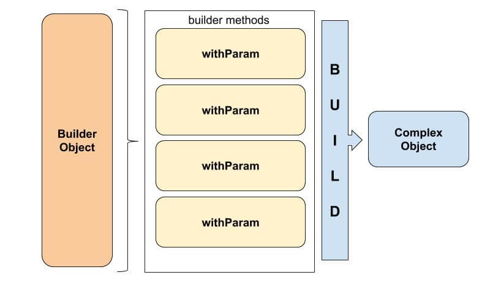
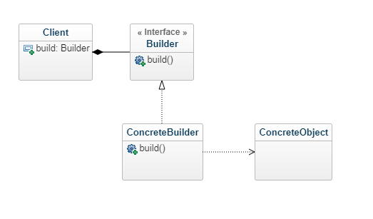

El patrón de diseño Builder permite crear objetos que habitualmente son complejos utilizando otro objeto más simple que los construye paso por paso.
Este patrón Builder se utiliza en situaciones en las que debe construirse un objeto repetidas veces o cuando este objeto tiene gran cantidad de atributos y objetos asociados, y en donde usar constructores para crear el objeto no es una solución cómoda.
Se trata de un patrón de diseño bastante útil también en la ejecución de test (unit test por ejemplo) en donde debemos crear el objeto con atributos válidos o por defecto.
Normalmente resuelve el problema sobre decidir qué constructor utilizar. A menudo las clases tienen muchos constructores y es muy difícil mantenerlos. Es común ver constructores múltiples con distintas combinaciones de parámetros.
Partes del patrón de diseño Builder
Mencionamos que el patrón de diseño Builder propone crear un objeto completo a partir de otro más simple simplificando la creación del objeto y ayudándonos a obtener un objeto consistente.
Necesitaremos entonces un objeto Builder que nos creará el objeto que concreto en base a parámetros que le vayamos pasando paso por paso.

Habitualmente y es buena práctica crear una interfaz con un método build que nos devolverá el objeto que deseamos.
Tenemos entonces en este patrón:
- La interfaz IBuilder de la cual implementaremos el / los Builder/s.
- La implementación de la interfaz builder que implementar el método build y que contiene el resto de métodos que recibirán los parámetros necesarios para construir el objeto final.

Como se crea el patrón de diseño Builder en Java
Dijimos que el propósito del patrón Builder es simplificar la creación de objetos que consideramos complejos.
Veamos un ejemplo para entender cómo lo resuelve.
Imaginemos un clase que mantiene los datos de una cuenta bancaria.
package patterns.builder;
public class BankAccount {
private long accountNumber;
private String owner;
private BankAccountType type;
private double balance;
private double interestRate;
public BankAccount() {
}
public long getAccountNumber() {
return accountNumber;
}
public void setAccountNumber(long accountNumber) {
this.accountNumber = accountNumber;
}
public String getOwner() {
return owner;
}
public void setOwner(String owner) {
this.owner = owner;
}
public BankAccountType getType() {
return type;
}
public void setType(BankAccountType type) {
this.type = type;
}
public double getBalance() {
return balance;
}
public void setBalance(double balance) {
this.balance = balance;
}
public double getInterestRate() {
return interestRate;
}
public void setInterestRate(double interestRate) {
this.interestRate = interestRate;
}
}La interfaz builder es muy simple, solo necesitas un método build.
El uso de la interfaz es opcional. Podrías omitir si deseas y crear directamente el build, pero es buena práctica usar la interfaz.
package patterns.builder;
public interface IBuilder {
BankAccount build();
}Ahora implementas la interfaz y agregas los métodos que irán recibiendo los parámetros.
En este ejemplo todos estos métodos que reciben los parámetros para crear el objeto empiezan con “with”. Cada método devuelve el builder.
El método builder crear el objeto destino usando todos los parámetros.
Es común agregar cualquier campo obligatorio como argumento en el constructor del builder dejando el resto de campos usando los métodos del builder.
También es habitual ver los builder como clases static internas del objeto que se desea crear.
package patterns.builder;
public class BankAccountBuilder implements IBuilder {
private long accountNumber; //This is important, so we'll pass it to the constructor.
private String owner;
private BankAccountType type;
private double balance;
private double interestRate;
public BankAccountBuilder(long accountNumber) {
this.accountNumber = accountNumber;
}
public BankAccountBuilder withOwner(String owner){
this.owner = owner;
return this; //By returning the builder each time, we can create a fluent interface.
}
public BankAccountBuilder withType(BankAccountType type){
this.type = type;
return this;
}
public BankAccountBuilder withBalance(double balance){
this.balance = balance;
return this;
}
public BankAccountBuilder withRate(double interestRate){
this.interestRate = interestRate;
return this;
}
@Override
public BankAccount build(){
BankAccount account = new BankAccount();
account.setAccountNumber(this.accountNumber);
account.setOwner(this.owner);
account.setType(this.type);
account.setBalance(this.balance);
account.setInterestRate(this.interestRate);
return account;
}
}Probamos ahora el patrón builder.
Primero creas el builder new BankAccountBuilder(accountNumber) que por defecto necesita el número de cuenta porque hemos considerado que es un valor indispensable.
Luego usamos el builder y vamos enviando los parametros uno por uno.
package patterns.builder;
public class BuilderPatternExample {
public static void main(String[] args) {
BankAccountBuilder builder = new BankAccountBuilder(12345l);
BankAccount bankAccount = builder.withBalance(1000.20)
.withOwner("Oaken")
.withRate(10.15)
.withType(BankAccountType.PLATINUM)
.build();
System.out.println(bankAccount);
}
}
La salida
BankAccount{accountNumber=12345, owner='Oaken', type=PLATINUM, balance=1000.2, interestRate=10.15}Algunas ventajas y desventajas de este patrón:
- El código resulta más fácil de mantener cuando los objetos tienen mucha cantidad de atributos.
- Disminuye los errores al crear el objeto porque el builder especifica paso a paso cómo crearlos y qué atributos necesita.
- La mayor desventaja es la necesidad de mantener la duplicidad de de atributos que deben estar en la clase destino y en el builder.
Conclusión
Cuando trabajamos con objetos complejos o cuando la complejidad empieza a crecer, el patrón de diseño Builder puede separar esta complejidad usando otro objeto para construir el objeto principal usando un “paso a paso” para tal fin.